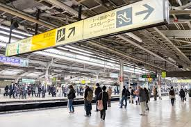
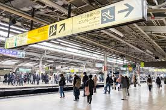
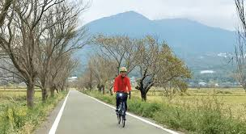
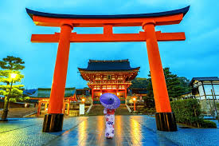
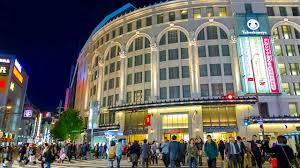

The Japan Rail Pass Dilemma
The JR Pass is only worth it if you take multiple long distance Shinkansen trips. For short trips or slower travel, stick to local trains and buses—they're often cheaper overall!
Mastering Japan's transport system without buying a pricey Shinkansen ticket.
The JR Pass is only worth it if you take multiple long distance Shinkansen trips. For short trips or slower travel, stick to local trains and buses—they're often cheaper overall!
For city-to-city travel (e.g., Tokyo to Kyoto), overnight buses are a game-changer. They save you a night of accommodation cost and the price of a high-speed train. They are slow but efficient for budget travelers.
Look into one-day passes for city subways/buses often around ¥600 ($3.96 US Dollars). In smaller cities like Kyoto, renting a bicycle is the cheapest and most fun way to see the sights.
Experiences that are priceless, but free (or nearly free) in cost.
Many of Japan's most beautiful Shinto shrines and Buddhist temples (like Meiji Jingu in Tokyo) and public gardens are completely free to enter. Only the main museum buildings sometimes charge a small fee.
Check major cities (Tokyo, Osaka, Kyoto) for free walking tours. Guides work for tips, ensuring high-quality, engaging content that's perfect for a traveler's budget.
Explore the food halls (Depachika) in the basements of major department stores. Though food is expensive, the free samples are abundant and delicious—a great way to try local delicacies!
